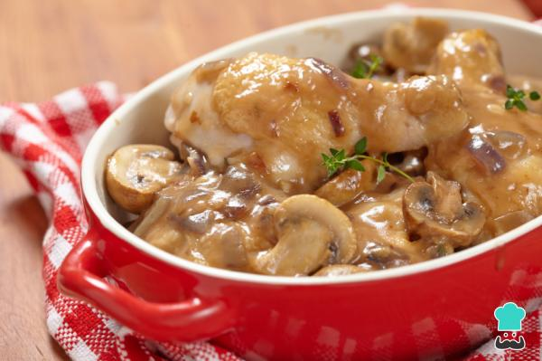
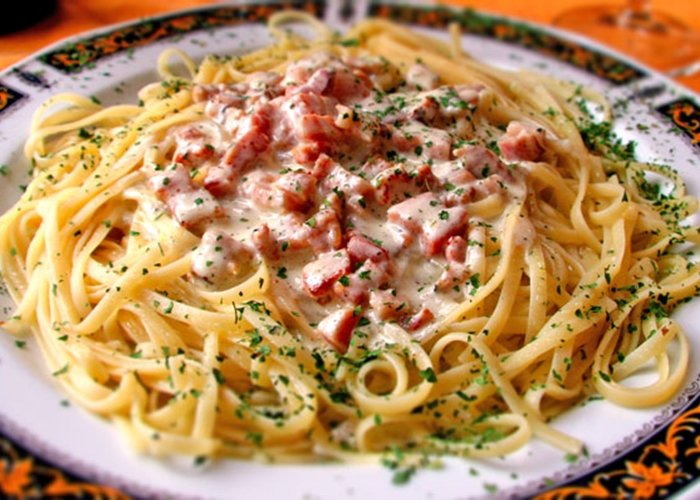

El Blog de los amantes de la
gastronomia
7 de Enero de 2018
Unos datos que debes tener en cuenta si quieres preparar un buen pollo con champiñones es que no se trata de una receta estricta, es decir que la puedes modificar según tus necesidades y también según lo que tengas en la nevera. Para el pollo, siempre recomendamos pechuga porque es más fácil de trabajar y comer, pero lo cierto es que otras partes del pollo como los muslos tienen mucho más sabor. En cuanto a los champiñones lo mismo, puedes usarlos frescos o de bote, o si te gustan muchos las setas puedes improvisar y mezclar con otras variedades como los portobello.
Juan32: Que gran post, aprendi mucho de la receta de las pastas
Carlos20:: Gracias, quedaron deliciosas mis pastas
Julia2:: Que gran post, sigan subiendo mas contenido
Ana7: Super me gusto mucho la receta de las pastas :D
03 de Enero de 2018
En una sartén con el aceite de oliva, rehogar la cebolla con el ajo, una vez caramelizado agregar la tocineta, cocinar. Agregar poco a poco la crema de leche, agregar sal y pimienta, añaadir el queso parmesano y la yema. Agregar la pasta y una cucharada de sal al agua hirviendo y cocinar. Mezclando frecuentemente hasta que estén al dente. Por último escurrir la pasta. Agregar la pasta a la salsa y mezclar hasta que toda esté impregnada. Espolvorear con perejil y servir inmediatamente.
Jhon32: Genial, seguire visitando mas seguido el blog, buenas recetas
luis23:Se ve delicioso el pollo con champiñones :)